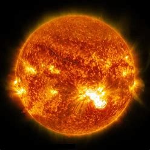
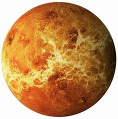
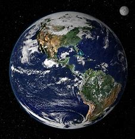
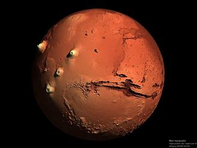
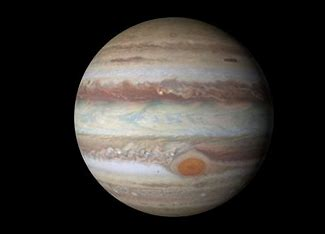
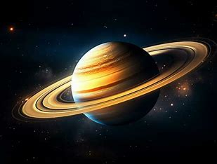
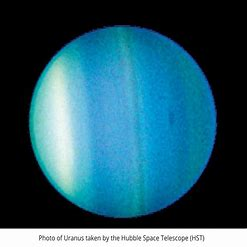
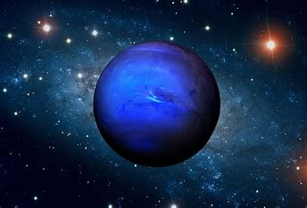
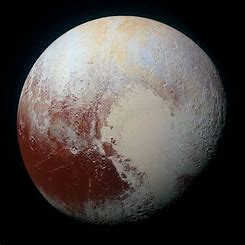

Solar System


The Sun is the star at the center of the Solar System...
Go Back
Mercury is the smallest planet in our solar system and nearest to the Sun...
Go Back
Venus is the second planet from the Sun and has a thick, toxic atmosphere...
Go Back
Earth is the third planet from the Sun and the only known place with life...
Go Back
Mars is often called the "Red Planet" because of its reddish appearance...
Go Back
Jupiter is the largest planet in our solar system and is known for its Great Red Spot...
Go Back
Saturn is famous for its beautiful rings made of ice and rock particles...
Go Back
Uranus is known for rotating on its side and has a pale blue color...
Go Back
Neptune is a deep blue planet and the farthest from the Sun in our solar system...
Go Back
Pluto, once considered the ninth planet, is now classified as a dwarf planet...
Go Back